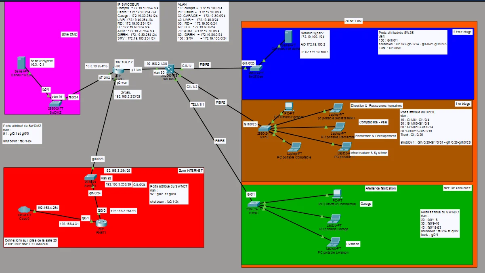
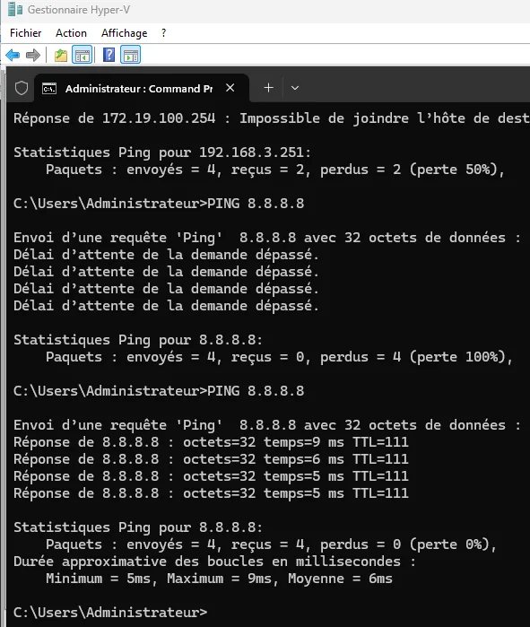
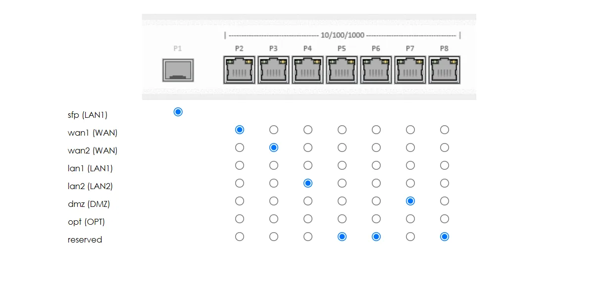
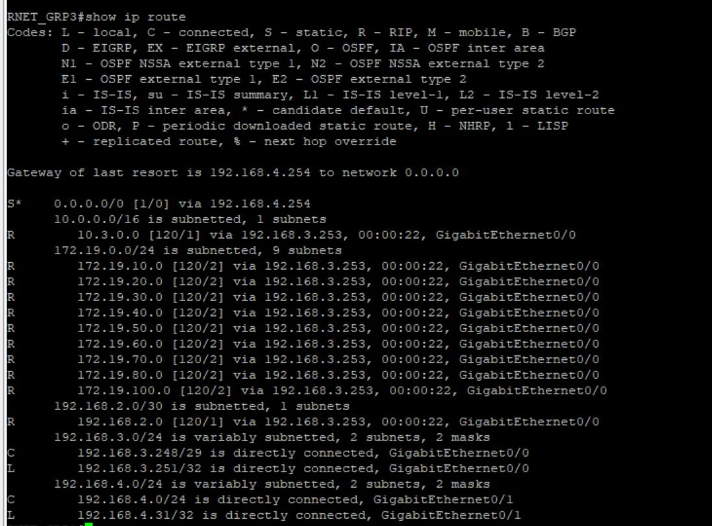
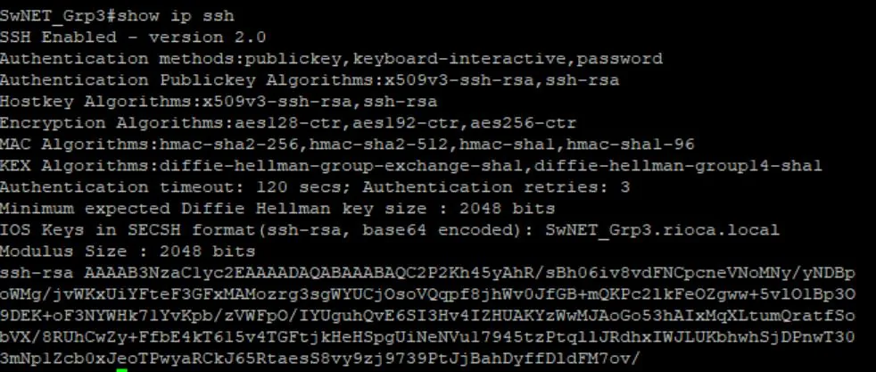
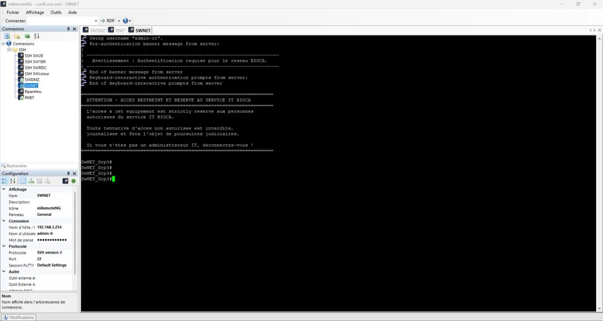
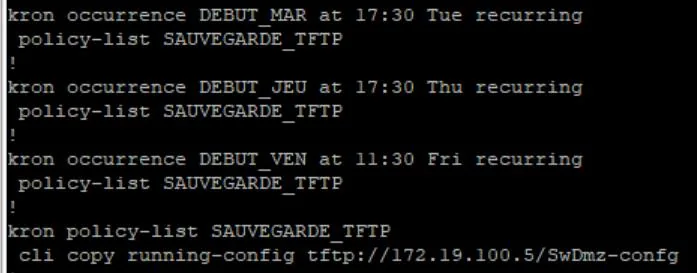
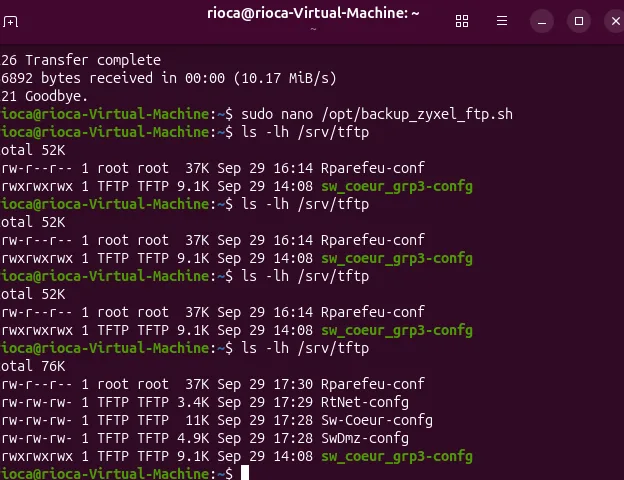
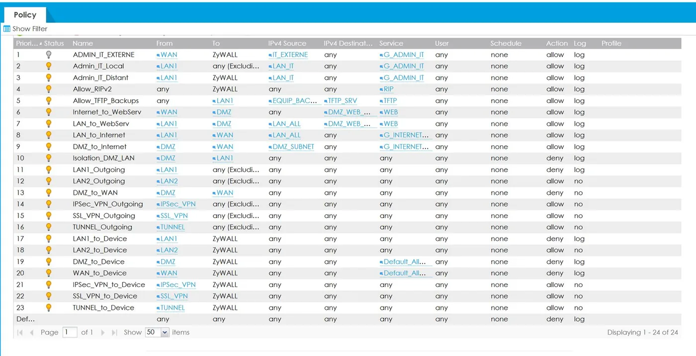
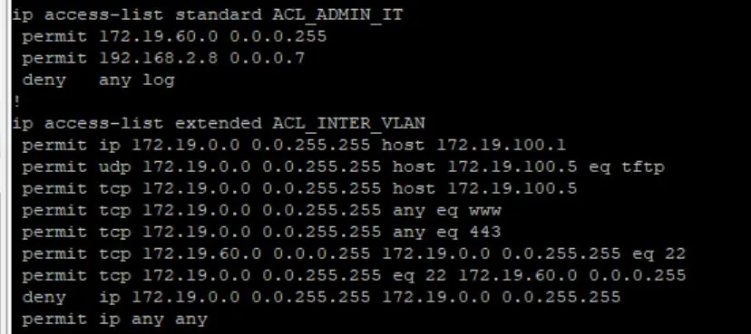

01Contexte et rôle
RIOCA a déjà cloisonné ses services en VLAN. Pour préparer la mise en production d'un serveur web sécurisé, la DSI veut ajouter au réseau local une zone DMZ et une zone Internet, tout en gardant le réseau aussi sûr que possible.
Le cahier des charges impose notamment :
- le protocole de routage RIP v2 ;
- l'accès à Internet pour le réseau local et la DMZ, sans pouvoir configurer le routeur de sortie du laboratoire (192.168.4.254) ;
- un serveur web de la DMZ joignable depuis le réseau local et depuis l'extérieur, avec un accès à la DMZ limité au strict nécessaire ;
- des services qui accèdent au contrôleur de domaine mais ne communiquent pas entre eux ;
- une administration des équipements réservée au service IT, depuis le réseau local et l'extérieur, avec contrôle d'accès et message d'avertissement ;
- une sauvegarde automatique de toutes les configurations.
J'étais chef de projet, en binôme. Nous avons construit ensemble le diagramme de Gantt : 21 tâches pour 27 heures prévues. J'ai ensuite organisé le tableau Trello, où nous suivions l'avancement et les temps réels. Le projet a été terminé en un peu moins de 23 heures.
| Moi | Mon binôme |
|---|---|
| Organisation du Trello et nommage des équipements | Mise à jour du schéma réseau et installation des équipements dans la baie |
| Configuration de base des switchs DMZ et Internet, et des zones du pare-feu | Configuration de base du routeur Internet |
| Routage RIP v2 et NAT | Administration à distance en SSH, messages d'avertissement et contrôle d'accès |
| Règles du pare-feu (flux hors réseau local) | ACL du réseau local (cloisonnement des services) |
| Sauvegardes automatiques vers le serveur TFTP | Rapport de tests |
| Documentation technique | Mise à jour des documents (schéma, adressage, comptes) |
02Architecture
Le pare-feu sépare trois zones. La zone Internet de la maquette est reliée au réseau du campus, qui joue le rôle d'Internet.
| Zone | Réseau | Éléments |
|---|---|---|
| LAN | 172.19.0.0/16, un /24 par VLAN | Postes des services, VLAN IT (172.19.60.0/24), serveurs du VLAN 100 (contrôleur de domaine, serveur de sauvegarde 172.19.100.5). Routage inter-VLAN par le switch cœur. |
| DMZ | 10.3.0.0/16 | Serveurs web 10.3.10.1 et 10.3.10.2, switch SwDmz 10.3.10.253, pare-feu 10.3.10.254 |
| Internet | 192.168.3.248/29 | Routeur RNET 192.168.3.251, pare-feu 192.168.3.253, switch SwNET 192.168.3.254 |
| Campus | 192.168.4.0/24 | Interface de RNET 192.168.4.31, routeur du laboratoire 192.168.4.254 (non administrable) |
| Équipement | Matériel | Rôle |
|---|---|---|
| SwDmz_Grp3 | Cisco Catalyst 2960 | Raccorde les serveurs web de la DMZ au pare-feu |
| SwNET_Grp3 | Cisco Catalyst 2960-X | Relie le pare-feu au routeur Internet |
| RNET_GRP3 | Cisco 2900 | Sortie vers le campus, NAT |
| RParefeu | Zyxel USG Flex 500 | Contrôle les flux entre LAN, DMZ et Internet |
| SW_COEUR_GRP3 | Cisco Catalyst 3650 | Routage inter-VLAN, RIP v2, ACL du réseau local |



03Switchs DMZ et Internet
SwDmz contenait une ancienne configuration. Elle a été effacée depuis le bootloader, en supprimant aussi les copies .renamed : sans cela, l'ancienne configuration revient au redémarrage.
switch: flash_init
switch: del flash:config.text
switch: del flash:config.text.renamed
switch: del flash:vlan.dat
switch: del flash:vlan.dat.renamed
switch: bootConfiguration de base de SwDmz (mots de passe masqués) :
hostname SwDmz_Grp3
enable secret ********
interface vlan 1
ip address 10.3.10.253 255.255.0.0
ip default-gateway 10.3.10.254
vtp domain RIOCA
vtp mode client- enable secret protège le mode privilégié, avec un mot de passe stocké chiffré.
- L'interface VLAN 1 donne au switch son adresse d'administration ; sa passerelle est l'interface DMZ du pare-feu.
- En mode client VTP, le switch reçoit les VLAN du domaine RIOCA sans pouvoir les modifier.
SwNET suit la même logique, avec l'adresse 192.168.3.254/29 et le pare-feu (192.168.3.253) comme passerelle.
04Routeur Internet et NAT
Le routeur du laboratoire n'étant pas administrable, il ne connaît pas les réseaux de la maquette. RNET_GRP3 traduit donc les adresses du réseau local et de la DMZ derrière sa propre adresse côté campus (NAT overload), et publie le serveur web.
interface GigabitEthernet0/0
ip address 192.168.3.251 255.255.255.248
ip nat inside
interface GigabitEthernet0/1
ip address 192.168.4.31 255.255.255.0
ip nat outside
access-list 1 permit 172.19.0.0 0.0.255.255
access-list 1 permit host 10.3.10.1
access-list 1 permit host 10.3.10.2
ip nat inside source list 1 interface GigabitEthernet0/1 overload
ip nat inside source static tcp 10.3.10.1 80 interface GigabitEthernet0/1 80
ip nat inside source static tcp 10.3.10.1 443 interface GigabitEthernet0/1 443
ip route 0.0.0.0 0.0.0.0 192.168.4.254- L'ACL 1 désigne les adresses à traduire : le réseau local et les deux serveurs web.
- overload fait sortir toutes ces adresses derrière l'IP 192.168.4.31, en distinguant les connexions par leur port.
- Les deux règles static tcp publient le serveur web 10.3.10.1 sur les ports 80 et 443.
- La route par défaut envoie le trafic vers le routeur du laboratoire.


05Pare-feu Zyxel
RParefeu, un Zyxel USG Flex 500, se configure depuis son interface web : assistant d'installation, changement du mot de passe administrateur, puis une adresse IP et une zone par interface. Il devient le point de passage unique entre les trois zones.
| Interface | Zone | Adresse | Reliée à |
|---|---|---|---|
| sfp (P1) | LAN1 | 192.168.2.2/30 | Switch cœur |
| dmz (P7) | DMZ | 10.3.10.254/16 | SwDmz |
| wan1 (P2) | WAN | 192.168.3.253/29 | SwNET |


06Routage RIP v2
RIP v2 tourne sur le switch cœur, le pare-feu et RNET : chacun apprend automatiquement les réseaux des autres zones, et RNET diffuse sa route par défaut vers Internet.
! Switch cœur
router rip
version 2
passive-interface Vlan70
network 172.19.0.0
network 192.168.2.0
no auto-summary
! RNET
router rip
version 2
network 192.168.3.0
network 192.168.4.0
default-information originate
no auto-summary- no auto-summary conserve les vrais masques au lieu de résumer par classe d'adresses.
- passive-interface évite d'envoyer des annonces RIP dans le VLAN d'administration.
- default-information originate diffuse la route par défaut de RNET au reste de la maquette.
- Sur le Zyxel, RIP se déclare par nom d'interface (sfp, dmz, wan1), et une règle de pare-feu autorise ces échanges.
| Problème rencontré | Cause | Correction |
|---|---|---|
| Lien switch cœur – pare-feu | Le pare-feu avait la même IP que le switch cœur | Une IP distincte de chaque côté du lien |
| Lien pare-feu – RNET | Les deux côtés du lien étaient dans des VLAN différents | Même VLAN des deux côtés |


07Administration à distance
Les huit équipements réseau s'administrent en SSH version 2 uniquement, avec un compte d'administration du service IT. Telnet est refusé sur les seize lignes VTY (mot de passe masqué) :
line vty 0 4
password ********
login
transport input ssh
line vty 5 15
login
transport input ssh| Où | Contrôle d'accès |
|---|---|
| Switch cœur | ACL qui n'autorise que le VLAN IT et le VLAN d'administration externe ; SSH vers le réseau local autorisé depuis le VLAN IT uniquement |
| Pare-feu | Règles qui réservent l'administration de SwDmz, SwNET, RNET et du pare-feu au VLAN IT, plus une règle pour l'adresse externe du service IT |
Une bannière s'affiche à chaque connexion sur les équipements Cisco :
ATTENTION - ACCES RESTREINT ET RESERVE AU SERVICE IT RIOCA
Toute tentative d'acces non autorisee est interdite,
journalisee et fera l'objet de poursuites judiciaires.



08Sauvegardes automatiques
Les configurations partent vers un serveur TFTP Ubuntu (172.19.100.5, VLAN 100), le mardi et le jeudi à 17h30 et le vendredi à 11h30 : les fins de séances, validées avec la professeure.
TFTP_DIRECTORY="/srv/tftp"
TFTP_ADDRESS=":69"
TFTP_OPTIONS="--secure --create"--secure enferme le service dans son dossier, et --create autorise le dépôt de nouveaux fichiers. Chaque équipement Cisco envoie lui-même sa configuration avec une tâche planifiée kron ; exemple sur SwDmz :
kron policy-list SAUVEGARDE_TFTP
cli copy running-config tftp://172.19.100.5/SwDmz-confg
kron occurrence DEBUT_MAR at 17:30 Tue recurring
policy-list SAUVEGARDE_TFTP
kron occurrence DEBUT_JEU at 17:30 Thu recurring
policy-list SAUVEGARDE_TFTP
kron occurrence DEBUT_VEN at 11:30 Fri recurring
policy-list SAUVEGARDE_TFTPLa même configuration est reprise sur les autres équipements, seul le nom du fichier change. Sur trois switchs, la sauvegarde passe par des applets EEM aux mêmes horaires. Le Zyxel ne sait pas planifier ce type de tâche : c'est le serveur qui va chercher sa configuration en FTP, avec un script lancé par cron.




09Règles du pare-feu
Onze règles ouvrent les seuls flux nécessaires. Le pare-feu applique la première qui correspond, toutes journalisent le trafic, et le filtrage est à état : les réponses aux connexions autorisées passent automatiquement.
| N° | Règle | Flux | Action |
|---|---|---|---|
| 1 | Admin_IT_Externe | Administration du pare-feu depuis l'adresse externe du service IT | Autoriser |
| 2 | Admin_IT_Local | VLAN IT vers les équipements hors LAN (SSH, HTTP, HTTPS) | Autoriser |
| 3 | Admin_IT_Distant | VLAN IT vers le pare-feu lui-même | Autoriser |
| 4 | Allow_RIPv2 | Annonces RIP vers le pare-feu (UDP 520) | Autoriser |
| 5 | Allow_TFTP_Backups | SwDmz, SwNET et RNET vers le serveur de sauvegarde (UDP 69) | Autoriser |
| 6 | Internet_to_WebServ | Internet vers les serveurs web (HTTP, HTTPS) | Autoriser |
| 7 | LAN_to_WebServ | Réseau local vers les serveurs web (HTTP, HTTPS) | Autoriser |
| 8 | LAN_to_Internet | Réseau local vers Internet (HTTP, HTTPS, DNS, ICMP) | Autoriser |
| 9 | DMZ_to_Internet | DMZ vers Internet, pour les mises à jour | Autoriser |
| 10 | Isolation_DMZ_LAN | DMZ vers réseau local : un serveur compromis ne doit pas ouvrir le réseau interne | Refuser |
| 11 | LAN1_Outgoing | Tout autre flux sortant du réseau local | Refuser |
Les règles par défaut du Zyxel placées en dessous ont été passées en refus, la règle finale en dernier, après avoir vérifié l'accès à l'interface d'administration : tout flux qui n'est pas explicitement autorisé est refusé.


10ACL du réseau local
Le pare-feu ne voit pas les échanges entre VLAN, qui passent par le switch cœur. Une ACL étendue, appliquée en entrée de chaque interface VLAN de service, autorise les flux communs puis interdit toute communication entre services :
ip access-list extended ACL_INTER_VLAN
10 permit ip 172.19.0.0 0.0.255.255 host 172.19.100.1
40 permit tcp 172.19.0.0 0.0.255.255 any eq www
50 permit tcp 172.19.0.0 0.0.255.255 any eq 443
60 permit tcp 172.19.60.0 0.0.0.255 172.19.0.0 0.0.255.255 eq 22
70 permit tcp 172.19.0.0 0.0.255.255 eq 22 172.19.60.0 0.0.0.255
80 deny ip 172.19.0.0 0.0.255.255 172.19.0.0 0.0.255.255
90 permit ip any any
interface Vlan10
ip access-group ACL_INTER_VLAN in| Lignes | Effet |
|---|---|
| 10 | Tout le réseau local joint le serveur 172.19.100.1, hôte Hyper-V du contrôleur de domaine |
| 40, 50 | HTTP et HTTPS autorisés |
| 60, 70 | SSH depuis le VLAN IT vers le réseau local, et ses réponses |
| 80 | Tout autre flux entre deux VLAN est refusé : les services ne communiquent pas entre eux |
| 90 | Le reste (DMZ, Internet) passe, puis est filtré par le pare-feu |
L'extrait omet les lignes propres au serveur de sauvegarde. La même commande ip access-group est appliquée sur chaque VLAN de service.


11Tests et bilan
Les tests ont été menés en deux temps, avant puis après la pose des restrictions, et consignés dans un rapport de tests :
- sortie vers Internet du réseau local à travers le pare-feu, et traductions visibles avec show ip nat translations ;
- routes RIP apprises sur chaque équipement et routage dans les deux sens ;
- accès au contrôleur de domaine depuis les services, et ping refusé entre deux services différents ;
- connexion SSH à chaque équipement depuis le VLAN IT ;
- fichiers de configuration reçus sur le serveur de sauvegarde aux horaires prévus.
Comme chef de projet, j'ai fait tester chaque tâche au fil de l'eau, grâce à une colonne « à tester » sur Trello, plutôt que de tout tester en fin de projet. Les règles les plus restrictives ont été posées en dernier, une fois les accès validés, pour ne pas perdre la main sur les équipements.
Le projet se poursuit avec ArchiSite, en cours : l'installation dans cette DMZ d'un serveur web sécurisé en HTTPS, d'une base de données et d'un serveur FTPS.